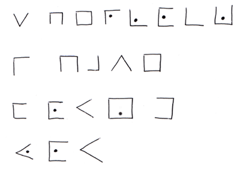

Posted in 2010
Another email from Anonymous. Perhaps it's something useful like a cheesecake recipe. Or perhaps, it's just more of the same.
'Sherlock Holmes!
Here's a picture you might enjoy:
Also, where is it the pigs live?
Mwah!
Xx'
Maybe this one will reveal who my stalker is. Have a go. Thanks. Sherlock
Some anonymous guy has been sending me emails. It could be nothing but I'll post them up here. Could be an interesting case that you can help me with...